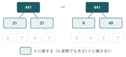

STEP I 2016、第7問
先に進む前に問題を読んでおこう。問題は STEP Support Programme の問題データベースにある： step.maths.org/questions/16-s1-q7
導入
\(1\) より大きいすべての整数は、ちょうど1通りに素数（prime）の積として書ける。\(60 = 2 \times 2 \times 3 \times 5\) であり、これ以外の書き方はない。この事実はあまりに何度も使ってきたので、証明が必要とは思えないほど自明に感じられるだろう。
この問題では、一見まったく自然に見えるのに、その「自明な」事実が成り立たない小さな数の世界を作る。STEP I の問題なので数学的には易しいが、得られる教訓は深い。それはまさに、1847年にフェルマーの最終定理（Fermat’s Last Theorem）の有名な証明の試みを打ち破り、代数学のまったく新しい分野の誕生につながった教訓なのである。
取りかかる前に
\(S\) と \(T\) の最初のいくつかの要素を書き出せ。小問 (iv) の定義によれば、\(S\) のどの要素が\(S\)-素数（\(S\)-prime）か。
\(S = \{1, 5, 9, 13, 17, 21, 25, 29, 33, \ldots\}\) であり、\(T = \{3, 7, 11, 15, 19, 23, \ldots\}\) である。\(S\) の数は、（\(1\) 以外の）より小さい \(S\) の要素の積として書けないとき、\(S\)-素数であるという。\(3\) は \(S\) に属さないので、通常の整数では \(9 = 3 \times 3\) であるにもかかわらず、\(9\) は \(S\)-素数であることに注意せよ。「素数」であるかどうかは、どの数を使ってよいかによって決まるのである。
順を追って解く
段階 1 和集合、共通部分、積
\(S \cup T\) は正の奇数全体の集合である。すべての奇数は \(4\) で割った余りが \(1\) または \(3\) だからである。\(S \cap T\) は空集合である。2つの異なる余りをもつ数は存在しないからである。
\(S\) の一般の要素はどのように書けるか。そのような要素2つの積は何か。
\(S\) の要素は \(a \geq 0\) として \(4a + 1\) の形であり、 \[(4a+1)(4b+1) = 16ab + 4a + 4b + 1 = 4(4ab + a + b) + 1 \in S.\] よって \(S\) は乗法について閉じている（closed under multiplication）。\(T\) については \[(4a+3)(4b+3) = 16ab + 12a + 12b + 9 = 4(4ab + 3a + 3b + 2) + 1,\] となり、これは\(T\) ではなく \(S\) に属する。例えば \(3 \times 7 = 21 \in S\) である。よって \(T\) は乗法について閉じていない。
段階 2 \(T\) に属する素因数
\(T\) に属する素数でない数をとる。その素因数はすべて奇数である。もしそれらがすべて \(S\) に属していたら、どうなるか。
この数は奇数なので、その素因数はすべて奇数であり、\(S\) か \(T\) に属する。もしそれらがすべて \(S\) に属するならば、\(S\) は乗法について閉じているので、それらの積は \(S\) に属する。しかしその積は考えている数そのものであり、\(T\) に属する。よって、少なくとも1つの素因数は \(T\) に属する。■
段階 3 奇数個の因数
\(T\) の要素を偶数個掛け合わせると、積はどこに属するか。奇数個ならばどうか。
\(T\) の数2つの積は \(S\) の数になり、\(S\) の数どうしの積は \(S\) の数になるので、偶数個の \(T\) の因数の積は \(S\) に属する。奇数個の場合は（\(S\) の要素）\(\times\)（\(T\) の要素1つ）となり、同様の計算によりこれは \(T\) に属する。
次に \(t \in T\) をとる。\(t\) が \(T\)-素数ならば、証明は終わりである。そうでなければ、\(t\) を \(T\) の要素の積として書く。各因数は \(1\) より大きいので、\(t\) より小さい。それらのうち \(T\)-素数でないものはさらに分解でき、以下同様である。因数は毎回小さくなるので、この操作は終わり（ここでも整列性（well-ordering）による）、\(t\) は \(T\)-素数の積として表される。積は \(T\) に属するので、因数の個数は奇数でなければならない。■
段階 4 2通りの因数分解
\(S\)-素数への本質的に異なる2通りの因数分解をもつ \(S\) の数を見つけよ。ヒント：\(9\) のように、通常の素因数が \(S\) に含まれないというだけの理由で \(S\)-素数となっている数を使え。
\(S\)-素数は \(5, 9, 13, 17, 21, 29, 33, 37, 41, 49, \ldots\) と続く。ここで \(21 = 3 \times 7\)、\(9 = 3 \times 3\)、\(49 = 7 \times 7\) はいずれも \(S\)-素数である。\(3\) と \(7\) は \(S\) に属さないからである。そして \[441 = 21 \times 21 = 9 \times 49.\] これは \(441\) の \(S\)-素数への2通りの異なる因数分解である（図 1.7.1）。\(S\) では素因数分解の一意性（unique factorisation）が成り立たない。■

振り返り
「素数」であるかどうかは体系による。\(9\) と \(21\) は整数の中では合成数だが、\(S\) の中では素数である。それらを因数分解するのに必要な数が欠けているからである。
閉じているかどうかが重要である。\(S\) は乗法について閉じているが、\(T\) はそうではない。このただ1つの違いが、小問 (iii) と (iv) の鍵となった。
自明な事実が定理であることもある。整数における素因数分解の一意性には証明が必要である。この問題はその理由を示している。よく似た体系において、それは偽なのである。
背後にある数学
整数を特別なものにしているもの
通常の整数では、なぜ因数分解がうまくいくのか。鍵となる事実はユークリッドの補題（Euclid’s lemma）である。すなわち、素数 \(p\) が積 \(ab\) を割り切るならば、\(p\) は \(a\) を割り切るか、または \(p\) は \(b\) を割り切る。これはユークリッドの互除法（Euclidean algorithm）を用いて証明され、まさに \(S\) で成り立たない性質である。そこでは、\(S\)-素数 \(9\) は \(21 \times 21 = 441\) を割り切る（\(441 = 9 \times 49\) だから）が、\(9\) は \(S\) において \(21\) を割り切らない。大学1年で、ユークリッドの補題を注意深く証明し、そこから素因数分解の一意性が導かれることを学ぶだろう。
1847年3月1日、ガブリエル・ラメ（Gabriel Lamé）はパリ科学アカデミーで、フェルマーの最終定理を証明したと発表した。彼のアイデアは、1の複素冪根（complex roots of unity）を用いて \(x^n + y^n\) を \[x^n + y^n = (x + y)(x + \zeta y)(x + \zeta^2 y) \cdots (x + \zeta^{n-1} y), \qquad \zeta = e^{2\pi \mathrm{i}/n}\] （\(n\) が奇数のとき）と因数分解し、各括弧の素因数について議論するというものであった。ジョゼフ・リウヴィル（Joseph Liouville）はすぐに異議を唱えた。\(\zeta\) から作られる数が一意に因数分解されると言えるのはなぜか、と。数週間後、エルンスト・クンマー（Ernst Kummer）が、それらがしばしば一意に因数分解されないことをすでに示していたことが明らかになった。最初に破綻するのは \(n = 23\) のときである。
クンマーは、素因数分解の一意性を回復させる追加の対象である「理想数」（ideal numbers）を考案して救えるものを救い、広い範囲の指数に対してフェルマーの最終定理を証明した。リヒャルト・デデキント（Richard Dedekind）はクンマーの理想数をイデアル（ideals）へと発展させた。これは現代代数学の中心的な概念の1つである。
覚えておきたい小さな例
数の体系 \(\mathbb{Z}[\sqrt{-5}] = \{a + b\sqrt{-5} : a, b \in \mathbb{Z}\}\) において \[6 = 2 \times 3 = (1 + \sqrt{-5})(1 - \sqrt{-5}),\] であり、4つの因数はいずれもこの体系で「素数」である（演習 3）。これを、因数分解が一意である第 1.6 節のガウス整数（Gaussian integers）と比べてみよ。この種の体系のうちどれが素因数分解の一意性をもつかは、深い問題である。ガウス（Gauss）は、\(\mathbb{Z}[\sqrt{-d}]\) の形の体系とその近い仲間のうち、それをもつのは9つだけであると予想した。これは最終的に、1952年から1967年にかけて Heegner、Baker、Stark によって証明された。
思考のスキル
ある事実が証明するまでもなく自明に感じられるときは、それが何に依存しているかを問い、それが成り立たない状況を探せ。
反例、すなわち「自明な」事実が偽となる世界を作ることは、証明に本当に必要なものを見つけ出す最良の方法の1つである。大学の代数学の多くは、整数のよく知られた性質のうちどれがより一般の体系でも生き残るかを問うことから成っている。
次の一歩
別の例。\(693\) が \(S\)-素数への2通りの異なる因数分解をもつことを示せ。このような例を作る一般的な方法を見つけられるか。
偶数。\(E = \{2, 4, 6, 8, \ldots\}\) とする。どの数が \(E\)-素数か。\(60\) が \(E\)-素数への因数分解を2通り以上もつことを示せ。
\(\mathbb{Z}[\sqrt{-5}]\)。ノルム（norm）\(N(a + b\sqrt{-5}) = a^2 + 5b^2\) を定義する。\(N(zw) = N(z)N(w)\) を示せ。ノルムが \(2\) または \(3\) となる元が存在しないことを示すことにより、\(2\)、\(3\)、\(1 \pm \sqrt{-5}\) は \(\mathbb{Z}[\sqrt{-5}]\) においてこれ以上因数分解できないことを導け。
ユークリッドの補題の応用。 発展 ユークリッドの補題（素数が \(ab\) を割り切るならば、それは \(a\) または \(b\) を割り切る）を仮定して、\(1\) より大きいすべての整数は、因数の順序を除いて、ただ1通りの素因数分解しかもたないことを証明せよ。
さらに学ぶために
Ian Stewart & David Tall, Algebraic Number Theory and Fermat’s Last Theorem（CRC Press）。『代数的整数論とフェルマーの最終定理』。冒頭の数章では、ラメ、クンマー、イデアルの物語が、意欲的な大学1年生がついていける水準で語られている。
John Stillwell, Elements of Number Theory。『数論の基礎』。整数とガウス整数における素因数分解の一意性を、並べて比較している。
Harold Edwards, Fermat’s Last Theorem: A Genetic Introduction（Springer）。『フェルマーの最終定理：発生的入門』。意欲的な読者向けで、クンマーの仕事をその歴史を通して解説している。